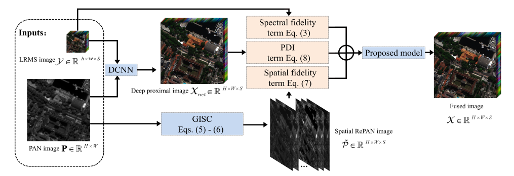
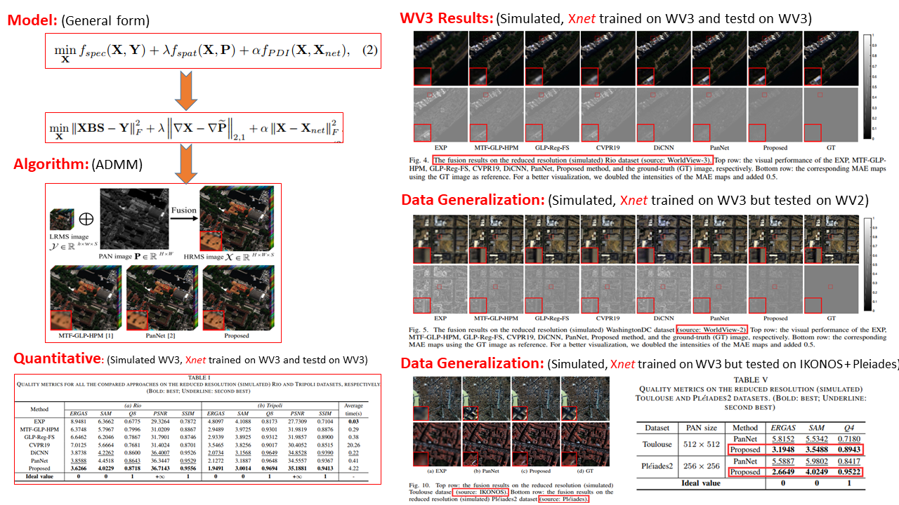

Zhong-Chen Wu, Ting-Zhu Huang*, Liang-Jian Deng*, Gemine Vivone, Jia-Qing Miao, Jin-Fan Hu, Xi-Le Zhao
Pansharpening is a very debated spatio-spectral fusion problem. It refers to the fusion of a high spatial resolution panchromatic (PAN) image with a lower spatial but higher spectral resolution multispectral (LRMS) image in order to obtain an image with high resolution in both the domains. In this paper, we propose a novel variational optimizationbased (VO) approach to address this issue incorporating the outcome of a deep convolutional neural network (DCNN). This solution can take advantages of both the paradigms. On one hand, higher performance can be expected introducing machine learning methods based on the training by examples philosophy into VO approaches. On other hand, the combination of VO techniques with DCNNs can aid the generalization ability of these latter. In particular, we formulate a ‘2-based proximal deep injection term to evaluate the distance between the DCNN outcome and the desired high spatial resolution multispectral image. This represents the regularization term for our VO model. Furthermore, a new data fitting term measuring the spatial fidelity is proposed. Finally, the proposed convex VO problem is efficiently solved by exploiting the framework of the alternating direction method of multipliers, thus guaranteeing the convergence of the algorithm. Extensive experiments both on simulated and real datasets demonstrate that the proposed approach can outperform state-of-the-art spatio-spectral fusion methods, even showing a significant generalization ability.

Results

Bib Citation
@ARTICLE{rkhspan,
author={Zhong-Chen Wu, Ting-Zhu Huang, Liang-Jian Deng, Gemine Vivone, Jia-Qing Miao, Jin-Fan Hu, Xi-Le Zhao},
journal={IEEE Journal of Selected Topics in Applied Earth Observations and Remote Sensing},
title={A New Variational Approach Based on Proximal Deep Injection and Gradient Intensity Similarity for Spatio-spectral Image Fusion},
year={2020},
volume={},
number={},
pages={},
}